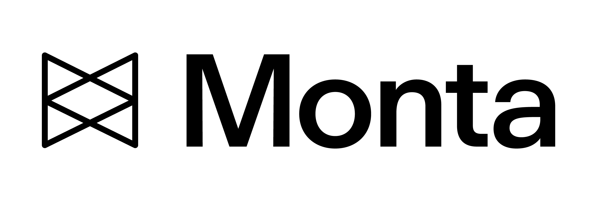

Monta · VP Product Experience · Dec 2024–PresentFormalizing UX at Europe's leading EV infrastructure platform
The situation
Monta had grown rapidly without a dedicated UX function. The product had real traction across EV charging networks, charge point operators, and end consumers — but no UX vision, no design career framework, and no experimentation infrastructure tied to business outcomes. I was hired as the company's first UX leader to build everything from scratch.
What we built
I connected the design function directly to quarterly business reviews, making research insights a standing agenda item. I led a team of 20+ across design, research, and content, delegating ownership broadly while staying close enough to lead by example — including personally owning the PostHog implementation, architecting the event taxonomy and A/B testing framework the team now runs experiments against.
That infrastructure became the foundation for a 20% month-over-month lift in MAU, driven by systematic experimentation and a comprehensive PLG onboarding redesign. On the product side, we led Monta AI, the Customer Council program, the NOC operations agent, and Mobile 2.0.
What I learned
The first job as a new UX leader isn't to redesign things — it's to earn trust and make the case for design maturity in the language of business outcomes.